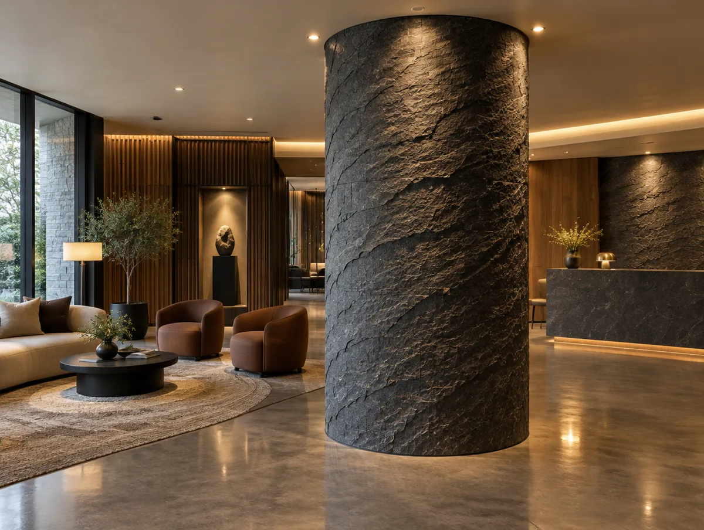

여섯 가지 표정,
하나의 두께.
트라버틴에서 테라코타 벽돌까지. 질감은 다르지만 전부 3밀리미터 안팎의 점토 판이라 같은 접착제, 같은 공구로 시공합니다.
제품
성적서가 있는 제품은 배지로, 참고 단가가 공개된 제품은 가격으로 구분됩니다. 샘플은 카드에서 바로 담깁니다.
판형 한눈에
폭 1200mm는 공통이고 길이 코드 Z·A·B·C(600·2400·2700·3000)가 색상마다 다릅니다. 셀프견적은 벽 높이에 맞는 길이를 먼저 추천합니다.
시공은 여섯 단계
시공 가이드 내려받기바탕 확인평활도 2mm/2m · 들뜸 제거
프라이머벽지·도장면은 필수 · 건조 2시간
접착제 도포빗살 흙손 6mm · 1.5~2.5kg/㎡
판 부착줄눈 실내 0~2mm · 외벽 2mm
재단 · 코너커터 재단 · 알루미늄 트림
양생24시간 후 줄눈 마감